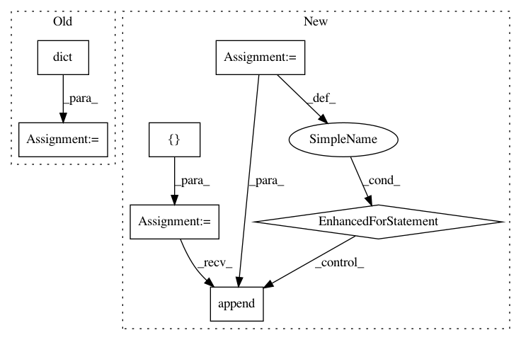

e231c3060cc377553c5668aadd873c3a5fd6fa6c,src/python/twitter/pants/tasks/builddictionary.py,BuildBuildDictionary,_gen_goals_reference,#BuildBuildDictionary#,269
Before Change
def _gen_goals_reference(self):
Generate the goals reference rst doc.
phases = dict()
for phase, goals in Phase.all():
phases[phase] = goals
template = resource_string(__name__,
After Change
phase_dict = {}
phase_names = []
for phase, raw_goals in Phase.all():
goals = []
for g in raw_goals:
// TODO(lahosken) generalize indent_docstring, use here
doc = (g.task_type.__doc__ or "").replace("\n", " ").strip()
goals.append(TemplateData(name=g.task_type.__name__, doc=doc))
phase_dict[phase.name] = TemplateData(phase=phase, goals=goals)
phase_names.append(phase.name)
phases = [phase_dict[name] for name in sorted(phase_names, key=str.lower)]
In pattern: SUPERPATTERN
Frequency: 3
Non-data size: 7
Instances
Project Name: pantsbuild/pants
Commit Name: e231c3060cc377553c5668aadd873c3a5fd6fa6c
Time: 2014-02-20
Author: lhosken@twitter.com
File Name: src/python/twitter/pants/tasks/builddictionary.py
Class Name: BuildBuildDictionary
Method Name: _gen_goals_reference
Project Name: OpenNMT/OpenNMT-py
Commit Name: bd7096d17a03f2c9375c7492f9e680e5cca7058e
Time: 2019-02-15
Author: dylan.flaute@gmail.com
File Name: onmt/inputters/dataset_base.py
Class Name: Dataset
Method Name: __init__
Project Name: pantsbuild/pants
Commit Name: 39a57d699153b9fea87d7922c999a1c07c3f5173
Time: 2014-02-21
Author: jsirois@twitter.com
File Name: src/python/twitter/pants/tasks/builddictionary.py
Class Name: BuildBuildDictionary
Method Name: _gen_goals_reference